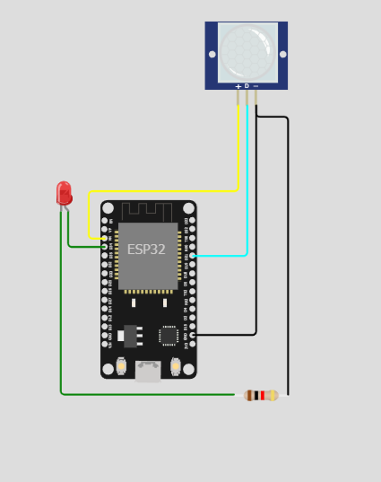

Motion Sensor LED
Micro-controller
โปรเจคนี้จัดทำขึ้นเพื่อ พัฒนาระบบการเปิด-ปิดไฟแบบอัตโนมัติโดยใช้อุปกรณ์ไมโครคอนโทรเลอร์ ESP32 และ PIR Motion Sensor ซึ่งเป็นเซนเซอร์ที่ใช้ตรวจจับการเคลื่อนไหว โดยเมื่อเซนเซอร์ตรวจพบวัตถุผ่านแล้วจะทำการเปิดไฟอัตโนมัติไม่ต้องไปทำการกดสวิตซ์ และเมื่อไฟถูกเปิด ก็จะทำการส่งไลน์แจ้งเตือนไปยังผู้ใช้ จะช่วยเพิ่มความสะดวกสบายให้กับผู้ใช้ ช่วยลดพลังงานไฟฟ้าเนื่องจากไม่ต้องทำการเปิดไฟตลอดเวลา และยัง สามารถนำไปใช้กับสถานที่ต่างๆได้อีกด้วย
- ใช้เซนเซอร์ตรวจจับการเคลื่อนไหวในการเปิด-ปิดไฟ
- มีระบบแจ้งเตือนผ่านไลน์
- เพิ่มความสะดวกสบายในการเปิด-ปิดไฟ
- ช่วยลดพลังงานไฟฟ้าได้
- สามารถเพิ่มความปลอดภัยให้กับสถานที่ต่างๆได้
1. ESP32 1 ตัว
2. Pir Motion Sensor 1 ตัว
3. LED 1 ตัว
4. Resistor 1 ตัว
เมื่อมีวัตถุผ่านเข้ามาบริเวณที่มีเซนเซอร์จับการเคลื่อนไหว เซนเซอร์จะทำหน้าที่ส่งข้อมูลเพื่อให้ไฟติดและทำการส่งการแจ้งเตือนไปยังไลน์ของผู้ใช้ เมื่อวัตถุเคลื่อนออกจากบริเวณนั้นไปเซนเซอร์จะส่งข้อมูลไปเพื่อทำให้ไฟดับ
นายณฐยศ อรุณสุริยศักดิ์ 64070142
นางสาวพัณณิตา สายศร 64070197
นายอนพัทธ์ นันทนพิบูลย์ 64070249
นายอาชัญ พลานุพัฒน์ 64070256